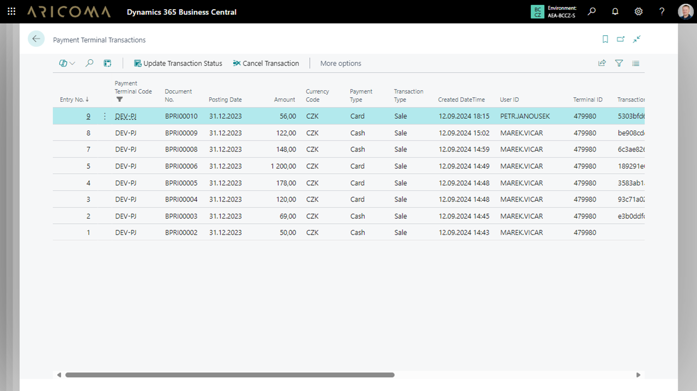

GP Tom Integration for Dynamics 365 Business Central
GP Tom Integration rozšiřuje funkcionalitu Dynamics 365 Business Central o možnost integrace s platebním systémem Tom od společnosti Global Payments. Tato aplikace umožňuje příjem platebních karet prostřednictvím mobilního terminálu (https://www.globalpayments.cz/cs-cz/terminal-v-mobilu), což poskytuje firmám flexibilitu v oblasti platebních řešení. Toto globální řešení je ideální pro podniky, které chtějí zefektivnit své obchodní procesy a zvýšit mobilitu svých pracovníků.
Hlavní přínosy GP Tom Integration:
- Okamžité použití – po jednoduché instalaci a nastavení přístupových údajů je aplikace připravena k okamžitému použití. Díky předpřipravenému formuláři je možné platby zpracovávat ihned, bez nutnosti složitých úprav nebo dodatečného programování.
- Integrace do zákaznických procesů – snadno přidáte integraci na libovolnou stránku v systému Dynamics 365 Business Central a přizpůsobíte ji specifickým potřebám zákazníků.
- Mobilní řešení – v kombinaci s mobilní aplikací Dynamics 365 Business Central a terminálem s tiskárnou získáte plně mobilní řešení, ideální pro obchodní týmy v terénu, gastronomii, trhy nebo mobilní prodejní místa.
- Efektivní platby – díky integraci s řešením Global Payments, získáváte přístup k bezpečnému a rychlému zpracování plateb, což zvyšuje důvěryhodnost vaší firmy u zákazníků. Platby mohou být prováděny jak v online, tak on-premise verzi Dynamics 365 Business Central.
- Flexibilní použití – platební zařízení s aplikací Tom lze využívat i samostatně bez nutnosti propojení s Dynamics 365 Business Central.


